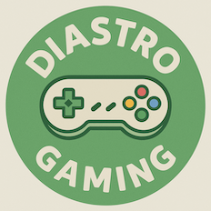

Who makes this

My name is Jesper. I live in the Netherlands with my wife, my son and our two cats.
I've been toying with the idea of starting a gaming channel for a very long time, but I've always doubted anyone would be interested in reading or watching what I have to say. But in 2026, something changed. Something needed to come out. So here I am, with you. I need to show and tell you this for me. Because I love video games more than anything in the world.
There are so many fantastic gaming content creators out there. The majority of great gaming content originates from North America. With this project, I try to tell stories about video games from a European perspective whenever that angle is relevant.
You'll also find that the Collections are not ranked, and they certainly aren't top 100 lists of the best games per platform. Instead, with each Collection I try to find noteworthy and interesting games across every major genre represented on the platform.
So, the adventure begins. You can find me here, and you can expect to find me on YouTube very soon. I can't wait to see where we go from here. Please enjoy Diastro Gaming Collections, and let's play some video games!
How Collections are made
Here is an overview of my method for each Diastro Gaming Collection. While I work out the plans for individual games' stories, this method focuses on the creation of the Collections.
- 1 Research With a vast prompt that includes my personal story and ideas about the platform, I instruct Claude to start researching. I convey the pillars of the project clearly, so that Claude goes genre-by-genre, focuses on a European historical viewpoint, and uses enthusiast and critic sources over popular consensus.
- 2 Curate From the research, I select 100 games based on critical, historical and regional significance, generally spread across 12 chapters. A good amount; not so low that it leaves out platform essentials, or so high that it becomes boring. Future Collections may be smaller if the platform's catalogue is small.
- 3 Fact-check A second Claude pass fact-checks every game's European title, release date, developer and publisher, as well as its historical significance. I double-check every title manually. It's a lot of fun and it pays off to really dive into the cult hits and regional curios!
- 4 Write by hand This is the best part: I play every single game! Looking at a massive library of 1500 games, you can bet your sweet stroopwafel I'll be fast-forwarding and drowning in save states at this point. ;) I'll write the stories by hand, and replace the AI-generated blurbs.
How AI is used
I am open and transparent about the use of AI. Without it, I couldn't build this project the way I want to, not in a hundred years! I use Claude Code for the technical side and Claude Desktop (Cowork) for research, fact-checking and first drafts. But the stories are human. A Diastro Gaming Collection only counts as finished when every word is hand-written by me.
| Part of the project | AI's role | Jesper's role |
|---|---|---|
| Code and styling | Programming, QA, bug fixing, versioning, refactoring, first pass of technical documentation (Claude Code). | Direction, product management, prompts, review, testing. Manual HTML and CSS improvements. Rewriting technical documentation. Tool configuration. |
| Research | Claude finds and cross-checks sources. I initially used Sonnet 5 (High effort), but switched to Opus 5.5 (High effort) after the first 6 Collections. | Additional research, verification, decision-making, attribution, tool selection, but you know the most important part: PLAYING ALL THE GAMES! :D |
| Early drafts | Claude generates the initial draft of each Collection's copy and blurbs as a starting point, which I think is fair game. | After the initial draft, every curator's note, chapter blurb, game blurb, game story, footer and version update gets rewritten by me. |
| Final text | None. | 100% hand-written by me! |
Rewrite progress overview
Each spine represents a Collection. Filled spines are fully hand-written, the dotted ones are in progress.
Updates automatically as Collections are rewritten.
The badges you'll see
When you see this badge, it means every word on the page was hand-written by me.
This badge means some text is still an AI-assisted draft either partially rewritten or scheduled to be rewritten.
Sources and credit
Credits and sources can be found at the bottom of every Collection. Game Details pages are coming in a future update, and they get inline sources.
The original Japanese sequel (The Lost Levels) was considered too tough for Western players, so Nintendo reskinned Yume Kōjō: Doki Doki Panic, a 1987 Famicom Disk System game, with Mario characters instead. It already felt surprisingly Mario-like, so the switch was easy, and that’s how we got the Super Mario Bros. 2 we know. Super Mario Wiki
Spotted a mistake? Please send me an email! There's a link on every page. I appreciate the help and will credit you.
Report a mistakeEthics and respecting creators
Brands, console names and game titles are used only to identify them. The project respects the intellectual property of respective rights holders.
This project does not and will never provide any links to copyrighted material or piracy sites.
Your privacy
Online privacy, both yours and mine, is extremely important to me. I consider this website a safe haven for all gamers. I respect your privacy like I hope you will respect mine. I don't need to know anything about you for us to enjoy some awesome games. So, in summary:
What is counted
- Anonymous page views over time
What never happens
- No user accounts or registration
- No tracking or profiling
- No selling or sharing of data
Outside services this site talks to
GoatCounter Used to count anonymous page views.
GitHub Pages This is where the project is hosted. GitHub may log visits for security, under its own privacy policy.
No ads, and funding
I do not and will never show ads on this website. Ads suck. Other than my ISP and Claude subscription, this project costs nothing to run.
As the project grows and expands to other platforms such as YouTube, I may consider adding a way to buy me a coffee or something. I also don't discount the possibility of setting up a Patreon at some point. You get the idea.
A note on YouTube specifically: I do plan on enabling monetization through YouTube Ads when eligible, and direct sponsorships are an option there. But I will carefully consider them and I will be transparent about them.
Beyond this website
Currently, you can find me on the platforms below. The same methods and rules regarding AI, crediting sources and privacy apply to Diastro Gaming videos and social posts, but be aware that by using these platforms, you also accept their respective privacy policies and terms of use. You and me both, unfortunately.